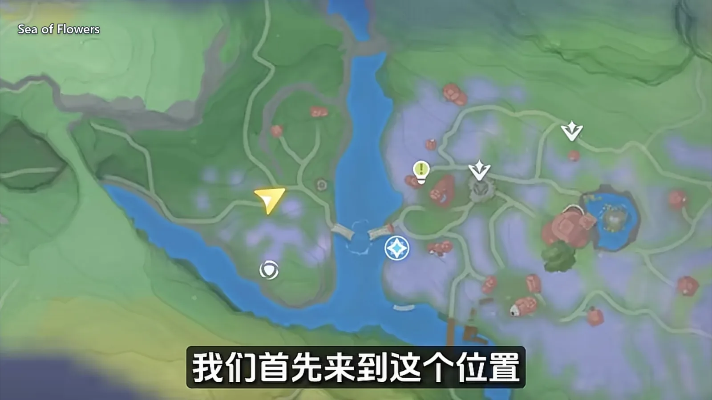
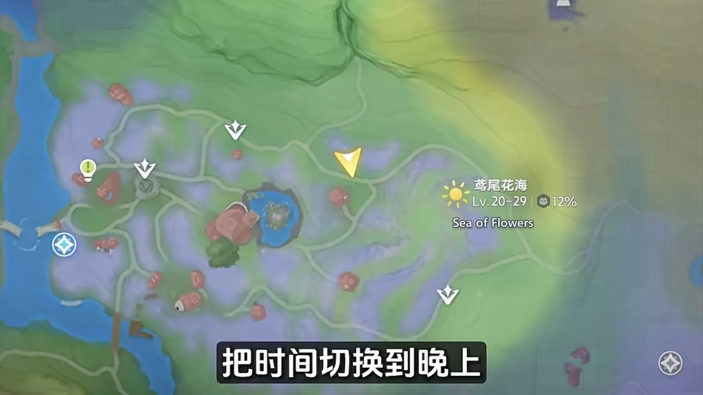
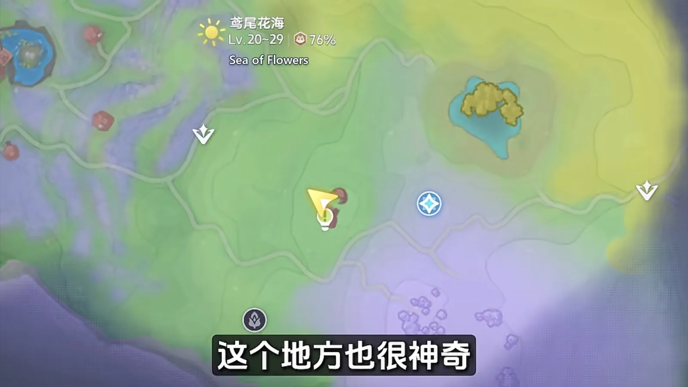
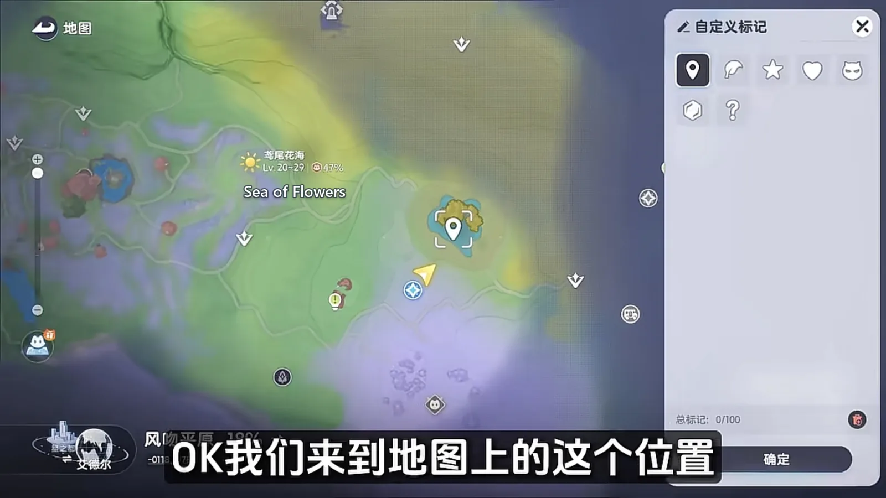
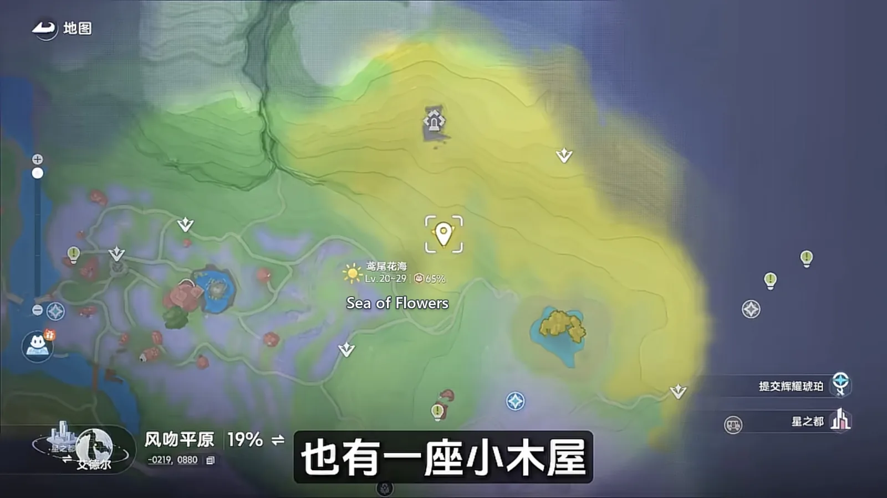
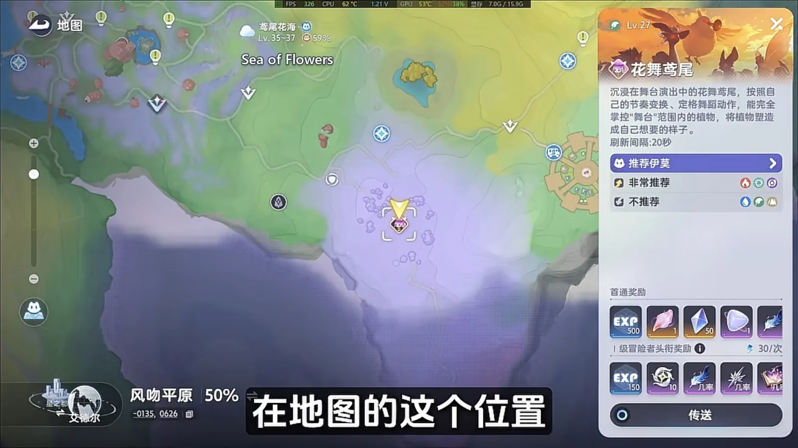

Home首页 / Guides攻略 / The Sea of Flowers: Six Spawn Points, Every Form They Hide《全地图、全形态伊莫收集》：鸢尾花海
Checked核对于 October 14, 20262026 年 10 月 14 日
The Sea of Flowers: Six Spawn Points, Every Form They Hide《全地图、全形态伊莫收集》：鸢尾花海
One lap of the Sea of Flowers: the six points the region's Aniimo gather on, which forms wait for night, and what the weather switches on.鸢尾花海一趟跑完：这片图的伊莫挤在六处刷新点上，哪几种形态要等天黑、哪些要等天气。
The Sea of Flowers keeps its Aniimo in a handful of places. Six points hold almost everything the region has, and they string together into one lap you can walk without doubling back. The rule that makes the lap quick is simple: a sleeping Aniimo is the easiest catch there is. Several of these points have a whole group lying down, and a plain throw lands at 100%. Switch the clock to night and more of them go to sleep, which means more forms in the same pass. What follows walks the six points in order, starting at the first one on the map.鸢尾花海这片图能抓的伊莫，基本都挤在六处刷新点上，串成一条线就是一趟走完。最有用的一个规律是：伊莫睡着的时候最好抓。地图上有几个点，一群伊莫会直接趴着睡，用普通方法就是百分百成功率；把时间切到晚上，睡着的会更多，一次能凑到的形态也更多。下面就从地图上第一处点位开始，按顺序把这六个位置走一遍。
Sleeping Aniimo are the easy ones: six in one spot睡着的伊莫最好抓，第一站一次六只
Open the map and come here first. This spot is unusual: every Aniimo standing on it is asleep, so a plain throw lands at 100%, and one pass picks up Nimbi (Wind · Support), Celestis (Dark · DPS), Hummin (Grass · Break), Budclaw (Rock · Grass · Break), Chirpi (Wind · Support) and Iris (Grass · DPS). Six entries on the register in about thirty seconds — the fastest stretch of the whole lap.打开地图，第一时间先来这里。这个位置很神奇，场上所有伊莫都在睡觉，用普通方法就能达到百分百的成功率，一次抓到 云朵羊（Nimbi，风 · 辅助）、星乐蒂（Celestis，暗 · 输出）、走调草（Hummin，草 · 击破）、花芽蟹（Budclaw，土 · 草 · 击破）、口哨鸥（Chirpi，风 · 辅助）和 飘飘花（Iris，草 · 输出）。三十秒拿下六个图鉴，这一站是整趟里最快的一段。

Turn the clock to night and all three Flutternym forms fall晚上切一刀，荧粉蝶三种形态一起收
At this point on the map, set the time to night and Flutternym (Wind · Heal) turns up in all three of its shapes at once — Basic Form, Sea of Flowers Form and Nighttime Form. One stop collects a whole species' worth of forms, which saves you going anywhere else for them.地图上这处点位，把时间切到晚上，荧粉蝶（Flutternym，风 · 治疗）的基础、花海、夜晚三种形态能一次性全抓到。一个点就把同一只的三个形态收齐，省得为它们单独再跑别处。

The tower: this is where Budsquire and Thornblade live塔楼：小哭苞和刺剑玫就住在这
Point the view at the ruined tower and head over. This one behaves like the first: a lot of forms come up at once around it. The common pair is Budsquire (Grass · DPS) and Thornblade (Grass · DPS), both in Basic Form. If the weather happens to be rain or a thunderstorm, a Thunderstorm Form Thornblade spawns under the tower on top of them; the Prismana Form Thornblade also spawns near here, but it only appears once Prismana weather is switched on, or after a nurture. Set the time to night and a Sea of Flowers Form Sparki (Fire · Regen) appears nearby as well.视角对着那座破烂的塔楼跑过去。这里也很神奇，附近会同时刷出很多种形态的伊莫，最常见的是基础形态的 小哭苞（Budsquire，草 · 输出）和 刺剑玫（Thornblade，草 · 输出）。要是碰巧是雨天或者雷雨天气，塔楼下面还会多刷出雷雨形态的刺剑玫；虹光形态的刺剑玫同样刷在塔楼附近，不过得开启虹光天气，或者用生态滋养，它才会出现。把时间调到晚上，附近还会刷出花海形态的 幽幽焰（Sparki，火 · 回能）。

The water: Skippy, Pranky, and Glacy水边：莲顶鱼、顽皮鱼，还有莹冰龙
This point on the map holds Skippy (Water · Heal) and Pranky (Water · Heal), both in Sea of Flowers Form. The two stand close enough to be taken in one sweep. There are fifteen of the Skippy here to catch, and setting the time to night so that they sleep makes the job far quicker. A Sea of Flowers Form Glacy (Water · Ice · Heal) spawns at this point as well.地图上这处位置，分布着花海形态的 莲顶鱼（Skippy，水 · 治疗）和 顽皮鱼（Pranky，水 · 治疗）。这两只凑在一块儿，一网下去能一起收。这里要抓的花海莲顶鱼有十五只，把时间调到晚上、让它们进入睡眠状态，抓起来会顺手很多。这个点还会刷出花海形态的 莹冰龙（Glacy，水 · 冰 · 治疗）。

Two cabins: Fragrancier, and Hummin's crowd两座小木屋：香氛鸟，还有走调草那一窝
Turn the view right and there is a cabin. This is the spawn point for the Sea of Flowers' only Fragrancier (Dark · Support) — it is not found anywhere else. At another point on the map there is a second cabin: by day it puts out a crowd of Mountain Form Hummin and Basic Form Dewy (Dark · Support), and by night it switches to Mountain Form Witchin (Dark · Grass · Regen). One building, two different sets of Aniimo.视角转到右边，有一座小木屋，是鸢尾花海唯一一只 香氛鸟（Fragrancier，暗 · 辅助）的刷新点，别的地方见不到它。再来到地图上另一处位置，同样有一座小木屋：白天会刷出很多山地形态的走调草和基础形态的 采蜜鸟（Dewy，暗 · 辅助），到了晚上则刷出山地形态的 巫帽草（Witchin，暗 · 草 · 回能）。同一座房子，白天和晚上是两拨伊莫。

Irisal: the boss the main story hands you花舞兰：主线就会碰到的头目
As for the region's boss, Irisal (Grass · DPS), following the main story brings you to it, and its point is the one marked here. Count that in and the region is about done.至于鸢尾花海的头目 花舞兰（Irisal，草 · 输出），走主线就会遇到，它的点位在地图上这一处。把它也算进来，这片图的伊莫就差不多了。

The order to walk it in走这一趟的顺序
None of this lap is optional and none of it is out of the way. Fix the order and it is a few steps: open the map in the region, go straight to the group of sleeping Aniimo and take six in thirty seconds; set the clock to night and collect Flutternym's three forms; then follow the tower, the water and the two cabins, checking each form's spawn point as you pass; and fight Irisal on the main story while you are there.这一趟没有多余的操作，顺序固定下来就几步：进图打开地图，第一站直接去那群睡着的伊莫，三十秒先收六只；接着把时间切到晚上，去抓荧粉蝶的三种形态；再沿着塔楼、水边、两座小木屋一路走，把每种形态的刷新点都过一遍；主线的花舞兰顺手就打了。
The reasoning behind that order is thin on purpose: sleeping Aniimo are the easiest catch, so take as many as possible in one go; night and the weather are the switches that spawn particular forms, so flip them as you pass the point that cares instead of walking back for them. The Sea of Flowers is a region you finish in one lap.这么排的道理很简单：睡着的伊莫最好抓，能一次多拿就一次多拿；晚上和天气是刷特定形态的开关，路过对应点位时顺手调一下就行，不用来回折返。鸢尾花海这一张图，跑一趟就齐了。